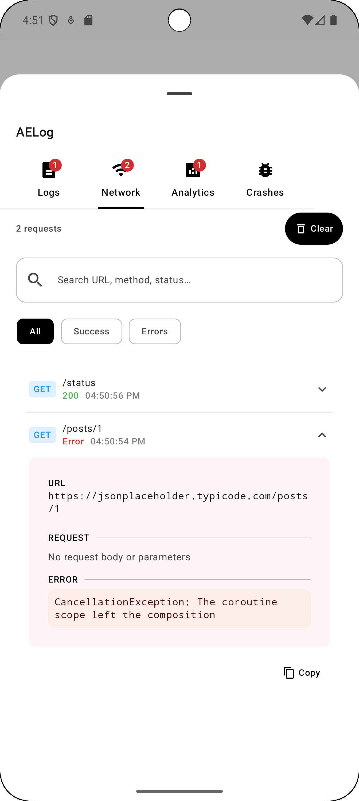

v1.0.0 is now live for KMP & Android
See more.
Fix faster.
The enterprise-grade logging and crash tracking library designed for modern mobile engineering teams. Capture every detail, trace every crash, and ship with confidence.
Natively supports
iOS
